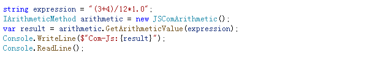
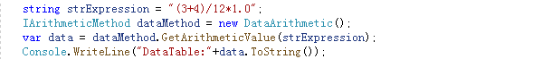
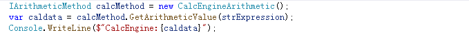
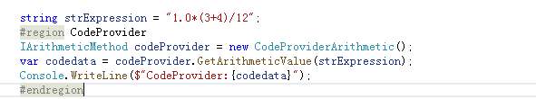

遇到一个需求，将存储在数据库中的计算表达式字符串，如“(2+4+5)/5*100.0” 转换为可以在代码中执行的计算公式，呀，以前没做过，怎么办？还能怎么办，打开浏览器，输入“C#字符串转运算符计算公式”，然后一条条筛选，
看看有没有灵感，于是乎开始了今天的话题，关于字符串转简单运算表达式的相关方法记录
网络搜索结果：
通过COM引入JS,使用Js的Eval函数
项目引用COM中的 Microsoft Script Control 1.0
Ps：此处Microsoft.JScript.Vsa.VsaEngine用法类似，不做细究
1 | //项目中添加上命名空间 MSScriptControl |
引入时，ScriptControlClass出现异常提示， “无法嵌入互操作类型 ,请选择合适的接口类型“，可以通过在引用中选中该程序集，查看属性，将嵌入交互改为False即可
调用：
执行结果：
优势：
相对来说性能比较好，实现简单
缺点：
引入COM组件，实现与其他语言的互操作交互，带来不必要的风险（下图为.Net Core 3.0出现异常）：
使用DataTable中的Compute
1 | public object GetArithmeticValue(string expression) |
调用：
结果：
使用SQL语句中Select语句实现
引入System.Data.SqlClient空间命名（此处以SqlServer为例）
1 | public object GetArithmeticValue(string expression) |
为简化结果，此处仅仅是显示拼接的Sql语句
1 | SELECT (3+4)/12*1.0 AS RESULT_VALUE |
数据库执行结果：
通过CalcParenthesesExpression函数（ 后序式计算 ）
引入GrapeCity.CalcEngine.Expressions程序集
1 | public object GetArithmeticValue(string expression) |
调用：
由于没有找到相关的dll故此函索仅仅作为网络参考
执行结果：
由于没有找到相关的dll故此函索仅仅作为网络参考
使用开源计算引擎
CalcEngine
这是在CodeProject中找到的一个开源库，属于应对.NET的一个计算引擎，在Nuget中能找到一个相关的发布版本的dll包Zirpl.CalEngine（仅仅兼容framewor 4.x）对Core版本需要自己手动下载源码调整后进行编译，自行处理
1 | using CalcEnginer = CalcEngine.CalcEngine; |
调用：
结果：
NCalc
项目中引入Nuget上的NCalc包，若为Core需要下载源码进行编译，线上程序集仅仅支持Framework 4.x
1 | using NCalc; |
调用：

结果：
C#中的CSharpCodeProvider
通过查阅微软官方文档可以知道，该 CSharpCodeProvider类来源于System.CodeDom.dll，Core/Framework 4.6+可通过Nuget进行下载引用，需要注意的是其中部分类型Core不支持
1 | using Microsoft.CSharp;//需要注意对应的命名空间 |
调用（Framework 4.6）：
结果：

参考链接
A Calculation Engine for .NET“CalcEngine”
Flee“Flee-暂时没用上-需求太简单”
C#字符串中包含的运算符按正常计算 例如按四则运算等，类似公式计算，很好很强大“ CSharpCodeProvider实现方式参考”